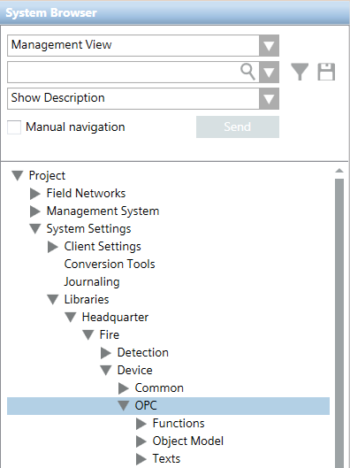

3rd Party OPC Fire
This section provides reference and background information about integrating 3rd party fire devices into Desigo CC via OPC.
For related procedures, see the step-by-step section.
OPC Library for 3rd Party Fire Integration
The OPC library for 3rd party fire integration is a partially preconfigured library for integrating 3rd party fire systems via OPC.
To use the library, the Danger Management > Fire 3rd Party extension module must be installed and included in the active project.
3rd party OPC Fire Library Components
The OPC library for 3rd party fire integration is installed in:
Project > System Settings > Libraries > Headquarter > Fire > Device > OPC.
The library contains the following sections:
- A list of available objects to represent the 3rd party fire system (Object Model):
- Automatic Fire Detector: fire detector for automatic alarm detection
- Automatic Fire Zone: zone relating to automatic fire detection
- Generic Detector: fire detector different from the standard automatic fire detector
- Generic Object 1: general-purpose object
- Generic Object 2: general-purpose object
- Input: input element which handles different information types coming from detection devices, such as technical alarms
- Manual Call Point: push-button for manual alarm activation
- Manual Fire Zone: zone related to manual alarm call points
- Output: output element to control external devices
- Technical Zone: zone related to technical alarms
- A list of functions to link to the OPC Network data points (Functions).
- A list of text groups (Texts) for assigning a text label and icon to each of the input values and output values needed to integrate the 3rd party fire system.
- Input value: a state condition that the management platform reads from the OPC server.
- Output value: a command that the management platform sends to the OPC server.
Objects (except for the three generic ones) are linked to one or more functions, while text groups (except for the three generic ones) are associated to functions. See the following table:
Relation Among Objects, Functions, and Texts | ||
Object | Function | Text Group1) |
Automatic Fire Detector | Automatic Detector | Automatic Fire Detector |
Automatic Fire Zone | Automatic Zone | Automatic Fire Zone |
(All objects) | (All functions) | Command2) |
Generic Detector | - | Generic Detector |
Generic Object 1 | - | Generic Object 1 |
Generic Object 2 | - | Generic Object 2 |
Input | Input | Input |
Power Supply (power supply module) | Power Supply | |
Manual Call Point | Manual Call Point | Manual Call Point |
Manual Fire Zone | Manual Zone | Manual Fire Zone |
Output | Output | Output |
Remote Transmission (generic remote transmission output) | Remote Transmission | |
Sounders (sounder output channel) | Sounders | |
Technical Zone | Technical Zone | Technical Zone |
1) | The Acknowledge State text group is not used. |
2) | The Command text group is available for all objects to have a separate list of command-specific values. |

3rd party OPC Fire License Counting
Each data point of the 3rd party fire system counts as 1 fire data point. This means that no SCADA point counting is applied.